Analyzing accident data to improve road safety and reduce fatalities.
This project focuses on understanding the broader problem of traffic accidents and road safety. It aims to raise awareness about accident causes, impacts, and the importance of safer transportation systems for society.
Road traffic accidents are one of the most serious public safety challenges faced by societies across the world. Roads are used daily by millions of people for commuting, education, healthcare, and leisure activities. As cities grow and vehicle ownership increases, the likelihood of accidents also rises significantly. Traffic accidents occur in various forms, including minor collisions, serious crashes, and fatal incidents. These accidents can happen on highways, city roads, rural streets, and residential areas. Many accidents occur suddenly, leaving little time for drivers or pedestrians to react. The consequences of such incidents are often long-lasting and deeply impactful. Families may lose loved ones, while survivors may face lifelong physical or emotional challenges. Road accidents affect not only individuals but entire communities. Understanding the broader issue of traffic accidents is essential for building safer roads.
Road safety is important because traffic accidents are largely preventable. Unsafe driving behaviors such as speeding, distracted driving, and reckless maneuvers contribute to many crashes. Environmental factors like rain, fog, and poor road lighting also increase accident risks. When safety measures are ignored, the results can be devastating. Traffic accidents can cause serious injuries that affect mobility and quality of life. Victims may require long-term medical care and rehabilitation. Families often experience emotional trauma and financial stress after accidents. Communities with high accident rates may feel unsafe using roads. Improving road safety helps protect lives and promotes responsible transportation. This makes road safety a shared responsibility for everyone.
Traffic accidents affect a wide range of people beyond just drivers. Pedestrians, cyclists, and passengers are equally vulnerable on the roads. Children walking to school and elderly individuals crossing streets face higher risks. Emergency responders are frequently exposed to traumatic accident scenes. Hospitals and healthcare systems experience increased pressure due to accident-related injuries. Employers may lose skilled workers because of accident-related disabilities. Families may suffer emotional loss and economic hardship. Communities may experience reduced mobility and public confidence. Road accidents also place a financial burden on governments. This highlights the widespread social impact of traffic accidents.
Governments and organizations have taken steps to improve road safety over time. Traffic laws such as speed limits and seatbelt requirements have been enforced. Roads have been improved with better signage and pedestrian crossings. Public awareness campaigns encourage responsible driving behavior. Vehicle safety features have been enhanced to protect occupants. Schools educate children about safe road practices. Law enforcement agencies monitor traffic to reduce violations. Despite these efforts, accidents continue to occur. This indicates that road safety is an ongoing challenge. Continuous awareness and improvement are still needed.
There is still significant potential to improve road safety worldwide. Rapid urbanization increases traffic congestion and accident risks. Some areas lack proper infrastructure such as sidewalks and lighting. Driver awareness and education vary across regions. Emergency response times can be improved in many locations. Community involvement can help promote safer road behavior. Responsible driving culture plays a key role in reducing accidents. Better planning can help prevent dangerous road conditions. Ongoing attention to safety can save countless lives. A safer road environment benefits everyone in society.
Open government road safety datasets are used to study accident patterns, severity levels, and environmental conditions affecting road safety.
For this project, traffic accident data was collected from publicly available government sources that track road safety and collision statistics. The main dataset comes from the UK Government Road Safety Data portal (data.gov.uk), which provides detailed information about road traffic collisions across the United Kingdom.
This dataset includes information such as the date and time of the accident, location coordinates (latitude and longitude), collision severity, number of vehicles involved, number of casualties, road type, speed limits, weather conditions, and lighting conditions. Using this data, we can analyze accident patterns in different areas, understand factors contributing to collisions, and identify high-risk zones.
In addition to downloading the dataset, data was also accessed through an API provided by the government portal, which allows real-time or periodic fetching of updated traffic accident records. This ensures that the project can work with the most recent data and demonstrates how automated data collection methods can be integrated into road safety analytics.
The dataset is updated regularly and maintained by the government to ensure accuracy and completeness. Using such open and verified sources ensures that the analysis is based on real-world events and provides meaningful insights for road safety.
By combining both static datasets and API-driven data, we can study patterns over time, compare accident severity across different regions, and provide recommendations to reduce road accidents and improve safety for drivers, pedestrians, and passengers.
After collecting the traffic accident data, the next crucial step is cleaning it to make it usable for analysis. Real-world datasets often contain missing values, errors, inconsistencies, or irrelevant information that can affect the accuracy of insights. For example, some accident records might have missing coordinates, incorrect dates, or unrecorded severity information. Cleaning the data ensures that the analysis is reliable and meaningful.
During data cleaning, we first identified and removed any duplicate records to prevent double-counting of accidents. Then, we handled missing values by either filling them with appropriate placeholders or removing incomplete records where necessary. For instance, if the location of an accident was missing, that record might not be useful for mapping accident hotspots and could be excluded.
We also standardized the format of the data to maintain consistency. This included converting dates and times into a uniform format, standardizing names of road types and weather conditions, and ensuring that numeric fields like the number of casualties or vehicles involved were properly formatted as numbers.
Outliers and erroneous data were also addressed. For example, accidents recorded with an impossible number of vehicles or casualties were carefully inspected and corrected or removed. This helps in avoiding misleading trends in the analysis.
Finally, categorical variables such as accident severity, lighting conditions, and weather conditions were encoded consistently to make them easier to analyze. By doing this, we ensured that the dataset is clean, organized, and ready for meaningful visualizations and insights.
Proper data cleaning is essential because even small errors or inconsistencies in the dataset can lead to incorrect conclusions. By carefully cleaning and validating the data, we can provide more accurate and actionable recommendations for improving road safety.
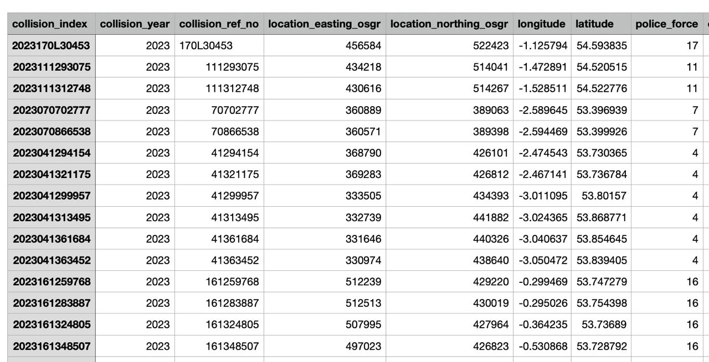 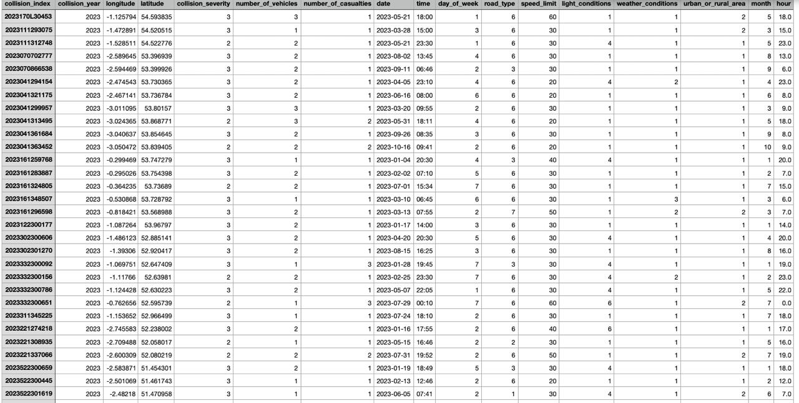Below are visualizations of accident data showing patterns, severity, and trends.
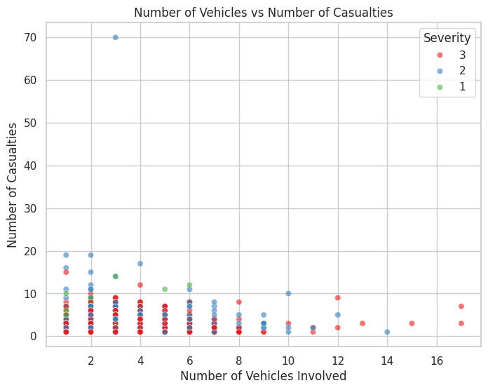 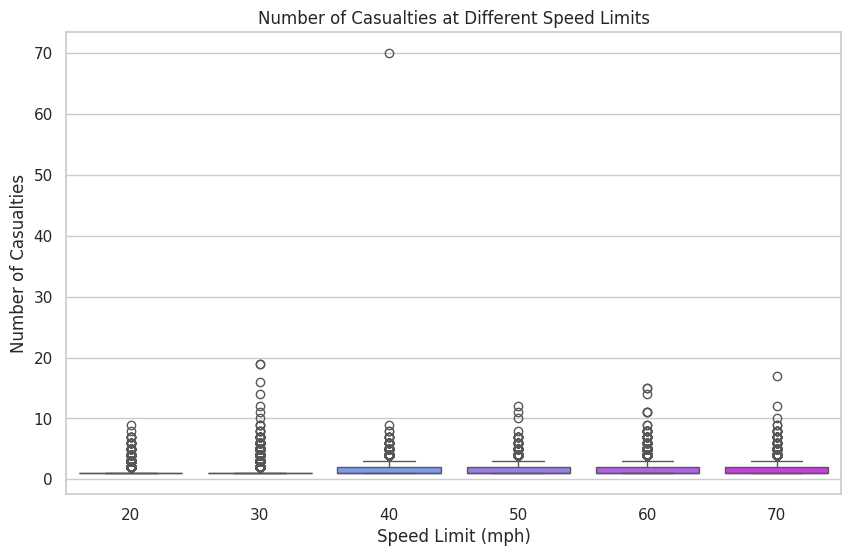 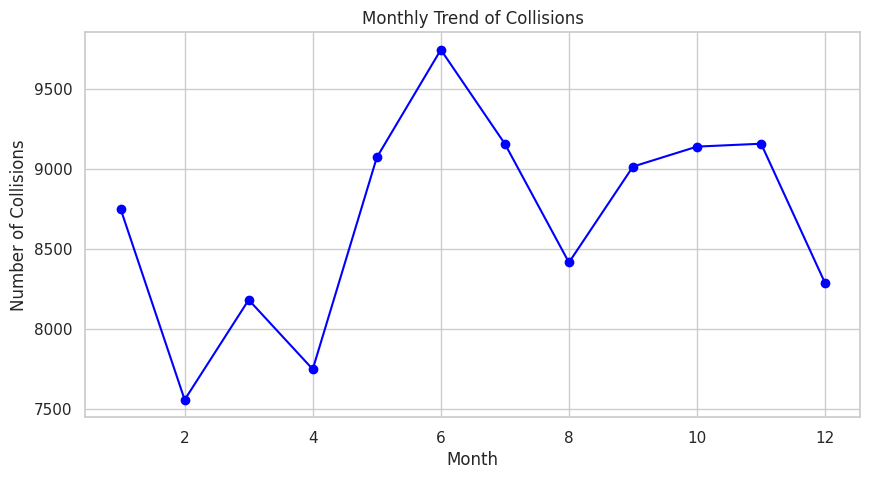 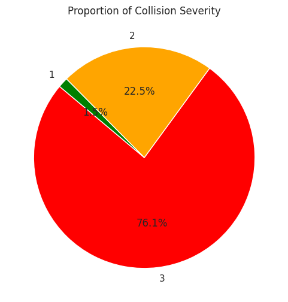 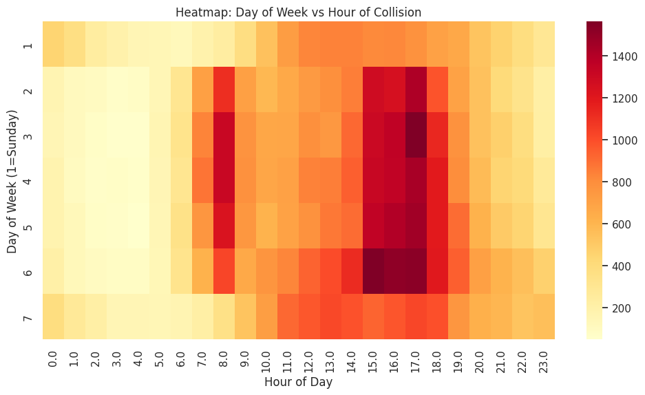 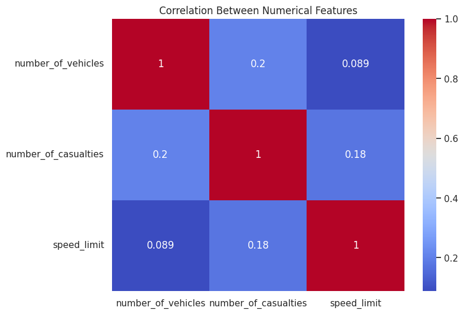 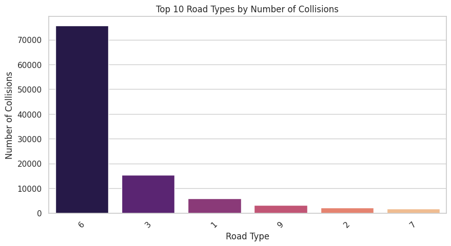 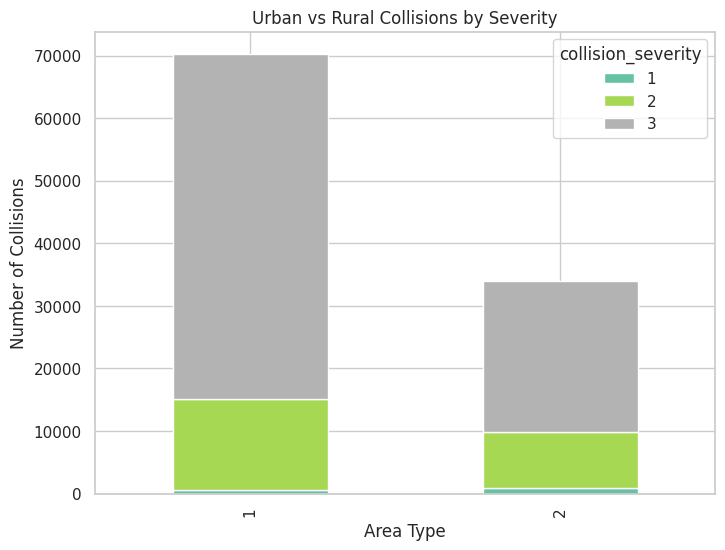 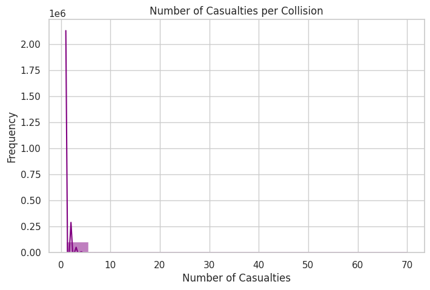 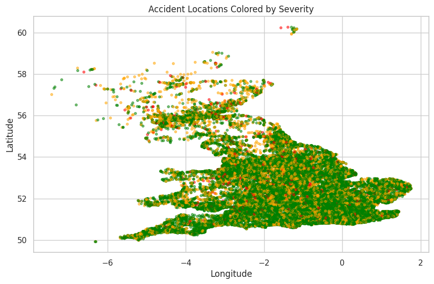This section focuses on the predictive modelling of traffic accidents. Here you can explore the models used, the code implementation, and the results obtained from the analysis.
In this project, machine learning models such as Random Forest, XGBoost, and Logistic Regression are considered to predict accident severity based on road, weather, lighting, and temporal features.
The model implementation is done in Python using libraries like pandas, scikit-learn, and XGBoost. Data preprocessing, feature engineering, and model training are included in this section.
Model performance is evaluated using metrics such as accuracy, precision, recall, and F1-score. Confusion matrices and feature importance plots help visualize results and interpret which factors contribute most to accident severity.